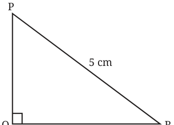
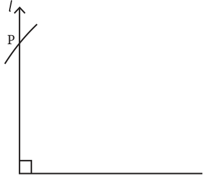

<!DOCTYPE html>
<html lang="en">
<head>
<meta charset="UTF-8">
<meta name="viewport" content="width=device-width,initial-scale=1">
<title>Measuring Two Sides in a Right Triangle — Geometric Twins</title>
<meta name="description" content="Class 7 Mathematics · Part 2 · Geometric Twins · Measuring Two Sides in a Right Triangle">
<link rel="icon" href="data:image/svg+xml,<svg xmlns='http://www.w3.org/2000/svg' viewBox='0 0 100 100'><text y='.9em' font-size='90'>📘</text></svg>">
<link rel="stylesheet" href="../../../assets/book.css">
<link rel="stylesheet" href="https://cdn.jsdelivr.net/npm/katex@0.16.11/dist/katex.min.css" crossorigin="anonymous">
</head>
<body>
<header class="topbar">
<div class="topbar-in">
  <div class="crumb">
    <span class="c1"><a href="../../../index.html">Library</a> · <a href="../../index.html">Class 7 Mathematics · Part 2</a></span>
    <span class="c2">Geometric Twins · Measuring Two Sides in a Right Triangle</span>
  </div>
  <a class="tb-btn" data-nav="prev" href="../../01-geometric-twins/13-measuring-two-angles-and-a-non-included-side/index.html" title="Measuring Two Angles and a Non-Included Side">←</a>
  <details class="drawer"><summary class="tb-btn" title="Sections in this chapter">☰</summary>
<div class="drawer-panel"><div class="dh">Geometric Twins</div><a href="../01-geometric-twins-1.1/index.html">1.1 Geometric Twins</a><a href="../02-figure-it-out/index.html">Figure it Out</a><a href="../03-congruence-of-triangles-1.2/index.html">1.2 Congruence of Triangles</a><a href="../04-measuring-the-sidelengths/index.html">Measuring the Sidelengths</a><a href="../05-conventions-to-express-congruence/index.html">Conventions to Express Congruence</a><a href="../06-figure-it-out/index.html">Figure it Out</a><a href="../07-measuring-the-angles/index.html">Measuring the Angles</a><a href="../08-measuring-two-sides-and-the-included-angle/index.html">Measuring Two Sides and the Included Angle</a><a href="../09-measuring-two-sides-and-a-non-included-angle/index.html">Measuring Two Sides and a Non-included Angle</a><a href="../10-two-angles-and-the-included-side/index.html">Two Angles and the Included Side</a><a href="../11-what-are-the-corresponding-vertices/index.html">What are the Corresponding Vertices?</a><a href="../12-figure-it-out/index.html">Figure it Out</a><a href="../13-measuring-two-angles-and-a-non-included-side/index.html">Measuring Two Angles and a Non-Included Side</a><a href="../14-measuring-two-sides-in-a-right-triangle/index.html" aria-current="page">Measuring Two Sides in a Right Triangle</a><a href="../15-angles-of-isosceles-and-equilateral-triangles-1.3/index.html">1.3 Angles of Isosceles and Equilateral Triangles</a><a href="../16-angles-in-an-equilateral-triangle/index.html">Angles in an Equilateral Triangle</a><a href="../17-figure-it-out/index.html">Figure it Out</a><a href="../18-summary/index.html">SUMMARY</a></div></details>
  <a class="tb-btn" data-nav="next" href="../../01-geometric-twins/15-angles-of-isosceles-and-equilateral-triangles-1.3/index.html" title="1.3 Angles of Isosceles and Equilateral Triangles">→</a>
  <button class="tb-btn" data-theme-toggle title="Toggle light / dark" aria-label="Toggle light or dark theme">◐</button>
</div>
<div class="progress"><span style="width:12.4%"></span></div>
</header>
<main class="wrap">
<div class="sec-head">
  <p class="eyebrow"><a href="../index.html">Chapter 1 · Geometric Twins</a></p>
  <h1>Measuring Two Sides in a Right Triangle</h1>
  <p class="sec-meta">Textbook pages 16–17 · 5 figures</p>
</div>
<article class="prose">
<p>ΔABC and ΔXYZ are right-angled triangles such that \(BC = YZ = 4\) cm, \(\angle B = \angle Y = 90 ^{\circ}\) and \(AC = XZ=5cm\). Are they congruent?</p>
<p>Can there exist non-congruent triangles having these measurements? Construct and find out.</p>
<p>Looking at the rough diagram helps in planning the construction.</p>
<figure class="fig"></figure>
<p>Step 1: Draw the base QR of length 4 cm. Step 2: Draw a line l perpendicular to QR from Q. Step 3: From R, cut an arc on line l of radius 5 cm. Step 4: Let P be the point at which the arc intersects the line l. Join PR.</p>
<figure class="fig"></figure>
<p>ΔPQR is the required triangle.</p>
<figure class="fig wide"></figure>
<p>Consider the downward extension of line l below QR. Would the arc from R meet this line downwards as well (as in the case of triangle construction when the sidelengths are given)? If so, would this lead to a triangle whose size and shape are different from ΔPQR, and yet has the given measurements? It can be seen that the other triangle we get below is also congruent to ΔPQR. Why? Therefore, all triangles having these measurements will be congruent to each other. Thus, we conclude that ΔABC \(\cong\) ΔXYZ. In the case that we have considered, the parts that are equal to their corresponding parts in another triangle are</p>
<ul class="qlist">
<li><span class="mk">(a)</span><span class="lt">the right angle</span></li>
<li><span class="mk">(b)</span><span class="lt">two other sides, one of which is opposite to the right angle. This</span></li>
</ul>
<p>side is called the hypotenuse. This is called the RHS (Right Hypotenuse Side) condition, and is one more condition for congruence.</p>
<p>Conditions that are sufficient to guarantee congruence</p>
<p>From the discussions so far, we can see that two triangles are congruent if any of the following conditions are satisfied:</p>
<ul class="qlist">
<li><span class="mk">(a)</span><span class="lt">SSS condition (b) SAS condition</span></li>
<li><span class="mk">(c)</span><span class="lt">ASA condition (d) AAS condition</span></li>
<li><span class="mk">(e)</span><span class="lt">RHS condition</span></li>
</ul>
</article>
<nav class="pager"><a class="" data-nav="prev" href="../../01-geometric-twins/13-measuring-two-angles-and-a-non-included-side/index.html"><span class="dir">← Previous</span><span class="t">Measuring Two Angles and a Non-Included Side</span><span class="ch">Geometric Twins</span></a><a class="nx" data-nav="next" href="../../01-geometric-twins/15-angles-of-isosceles-and-equilateral-triangles-1.3/index.html"><span class="dir">Next →</span><span class="t">1.3 Angles of Isosceles and Equilateral Triangles</span><span class="ch">Geometric Twins</span></a></nav>
</main><footer class="site">Generated from the source textbook PDFs · text, figures and exercises belong to their respective publishers.</footer><script defer src="https://cdn.jsdelivr.net/npm/katex@0.16.11/dist/katex.min.js" crossorigin="anonymous"></script>
<script defer src="https://cdn.jsdelivr.net/npm/katex@0.16.11/dist/contrib/auto-render.min.js" crossorigin="anonymous"
  onload="renderMathInElement(document.body,{delimiters:[
    {left:'\\(',right:'\\)',display:false},
    {left:'$$',right:'$$',display:true},
    {left:'\\[',right:'\\]',display:true}],throwOnError:false,ignoredTags:['script','noscript','style','textarea','pre','code']})"></script>
<script src="../../../assets/book.js"></script>
<script defer src="../../../../assets/search.js?v=1789782769"></script>
<script defer src="../../../../assets/screenshot.js?v=2"></script>
</body>
</html>
